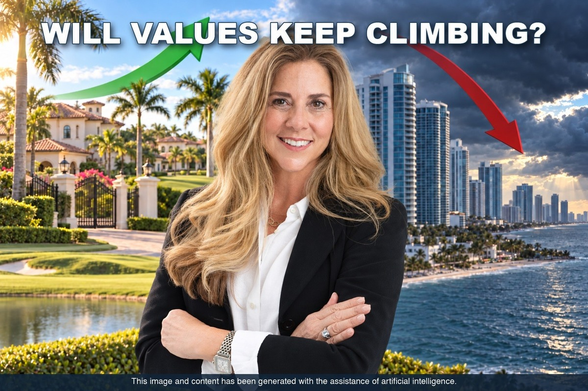

Ask ten Florida market experts where luxury home values go from here and you’ll get two camps: those who see the run continuing, and those who see the market catching its breath. Both camps have credible people in them — so this week I’m giving you both, straight.
I work with Seven Bridges buyers and sellers every day, and I read this commentary with one question in mind: what does it mean for a homeowner inside our gates deciding whether to sell before season, hold, or buy?
The inventory argument. At The Real Deal’s “Welcome to the New Miami” event on September 24, Julian Johnston, a broker associate at ONE Sotheby’s International Realty, argued that the shortage of quality luxury inventory isn’t going away — and that money keeps arriving from high-tax, high-friction markets abroad and out of state.
The economist’s view. Lawrence Yun, chief economist of the National Association of Realtors, forecasts national home prices rising about 4% in 2026, and as of this summer expects home sales to improve in the second half of the year. That’s steady appreciation, not a boom — and after the last five years, steady may be the healthiest word in real estate.
The developer’s view. In a mid-year 2026 industry roundup, Noah Breakstone, CEO of Fort Lauderdale-based BTI Partners, described Florida demand as having “remained resilient” despite elevated interest rates and insurance pressures — more discerning than the post-COVID frenzy, but still positive, with migration into Florida’s major metros continuing.
The political tailwind. Back in June 2025, Governor DeSantis predicted Palm Beach real estate would “skyrocket” if New York City elected a socialist mayor. New York did just that in November. Whatever your politics, the wealth-migration pipeline from the Northeast remains a real, measurable force in our county’s luxury market.
The hard data backs the bulls — at least in our segment. According to the Keyes / Illustrated Properties Luxury Report, South Florida closed 3,382 sales above $1 million in the first quarter of 2026, up 22% from a year earlier. Palm Beach County alone closed 2,028 single-family sales above $1 million, up about 21%. Every home on the market in Seven Bridges today sits in that $1 million-plus single-family segment. (At the very top, the $5 million to $10 million bracket grew 35%.)
And one bearish analysis (more on it below) concedes a point that matters to us: Palm Beach County single-family median prices have been setting new highs, up 7.7%, with roughly 88% of the county’s $1 million-plus purchases made in cash. Cash buyers don’t get margin-called by mortgage rates.
Now the other side, because you deserve the full picture.
Dr. Brad O’Connor, chief economist at Florida Realtors, framed this spring as a fork in the road — Florida Realtors’ own coverage called the market an “inflection point.” His tell to watch: days on market. In April, the median Florida single-family home went under contract in 44 days, nearly identical to the same month in 2019 and 2025. If that number stretches through fall, it signals softening demand; if it holds, the market has found its footing.
The genuinely bearish view comes from analysts like LongYield, whose February 2026 report projects statewide prices declining another 2–4% through year-end. But read the fine print: the damage is concentrated in condos (down 6.1% year-over-year statewide, with over 13 months of supply) and in Southwest Florida — Cape Coral, Naples, Sarasota. That is a very different market from gated single-family communities in west Delray Beach and Boca Raton.
Through September 30, the 2026 Atlantic season had produced eight named storms and not a single hurricane — the first season since 1914 to go that late without one, thanks largely to El Niño. No hurricane had made a Florida landfall this year as of that date.
A caution flag before we celebrate: September is historically the peak month for Florida hurricane landfalls, but October is the top month for strikes on South Florida specifically. The season runs through November 30. Still, a quiet year helps the insurance conversation — and buyer psychology — heading into season.
Here is where the national debate meets our own street. Seven Bridges has 14 homes on the market against 26 sales so far this year — about 0.54 listings for every sale, which puts it among the less-tight communities on the comparison below. Two homes that were on the market at the end of September are now under contract, and prices on the market today run from $1.48 million to $3.95 million.
If you’re thinking of selling: the fall listing window ahead of season is opening now, and the county’s $1 million-plus single-family segment is still growing. But you won’t be alone on the market, so pricing and presentation matter. Price to what Seven Bridges homes are actually selling for, not to a headline — bullish or bearish.
If you’re holding: watch days on market through the fall, as O’Connor suggests. A patient hold in a cash-heavy single-family community is a very different risk than holding a Gulf Coast condo.
If you’re buying (or moving up within the community): you have real choice right now, across a wide range of floor plans and price points. Steady, 4%-type appreciation in Palm Beach single-family argues against waiting for a dip the data doesn’t show — though nobody can guarantee where prices go, which is exactly why both camps exist.
Every one of these decisions is personal — it depends on your timeline, your family, and your next chapter. If you’d like to talk through what the market is actually doing on your street, not just in the headlines, I’m always happy to help.
| Active | Closed YTD 2026 | Highest List | Lowest List |
|---|---|---|---|
| 14 | 26 | $3,950,000 | $1,475,000 |
Homes listed for every home sold. Lower means a tighter market.
| Community | Active | Closed | Listed per sale |
|---|---|---|---|
| Polo Club | 8 | 97 | 0.08 |
| Boca West | 21 | 204 | 0.10 |
| Broken Sound | 14 | 94 | 0.15 |
| Seasons | 2 | 10 | 0.20 |
| Delaire | 2 | 9 | 0.22 |
| Lotus | 9 | 40 | 0.23 |
| Stonebridge | 6 | 22 | 0.27 |
| Long Lake Estates | 2 | 7 | 0.29 |
| St. Andrews | 8 | 25 | 0.32 |
| The Oaks | 12 | 37 | 0.32 |
| Boca Bridges | 10 | 26 | 0.38 |
| Mizner Country Club | 5 | 13 | 0.38 |
| Addison Reserve | 13 | 32 | 0.41 |
| Woodfield | 23 | 56 | 0.41 |
| The Bridges | 12 | 29 | 0.41 |
| Seven Bridges | 14 | 26 | 0.54 |
| Bocaire Country Club | 11 | 20 | 0.55 |
| Royal Palm Yacht & Country Club | 23 | 41 | 0.56 |
| Boca Grove | 12 | 13 | 0.92 |
| The Sanctuary* | 8 | 1 | — |
| Le Lac* | 1 | 2 | — |
A rare Belvedere model in the Empire Collection, with the largest single-story floor plan in Seven Bridges. Every bedroom has its own en-suite bath, and the ultra-private waterfront lot sits at the entry to a cul-de-sac with no neighbors directly across the water. An oversized chef’s kitchen, a Tavern Room for entertaining, outdoor kitchen, full impact glass, and a whole-house generator.
View DetailsListed by Douglas Elliman · Private showings: call or text Dina at 561-769-8000
View All 14 Seven Bridges Homes
Whether you’re weighing a sale before season, holding, or looking to buy in Seven Bridges, I’m happy to share what’s actually happening inside the gates — quietly and without obligation.
Email DinaDina Ulrich is a Licensed Real Estate Salesperson with The Edmund Bogen Team at Douglas Elliman Real Estate. She specializes in South Florida’s premier luxury gated communities, with a particular focus on Seven Bridges in Delray Beach and the neighboring communities of The Bridges, Lotus and Boca Bridges, and brings data-driven market intelligence to discerning buyers and sellers.
dina@bogenhomes.com · Cell: 561-769-8000